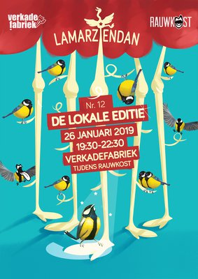
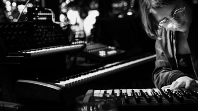

vrijdag
19:30-23:30
Lamarziendan
Lamarziendan is hét rondreizende podium van Den Bosch voor alle lagen en regionen van de (podium)kunsten. Een collectief van makers die elkaar nog niet kenden zet improviserend een avond neer vol cabaret, circus, theater, poëzie, performance, muziek en kleinkunst. Wil jij ook spontaan optreden? Lamarziendan!


vrijdag
22:00-22:30